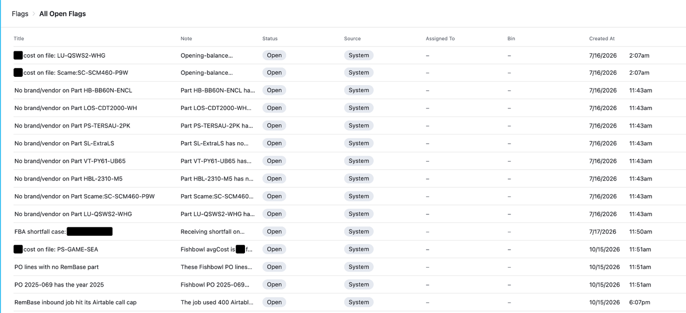
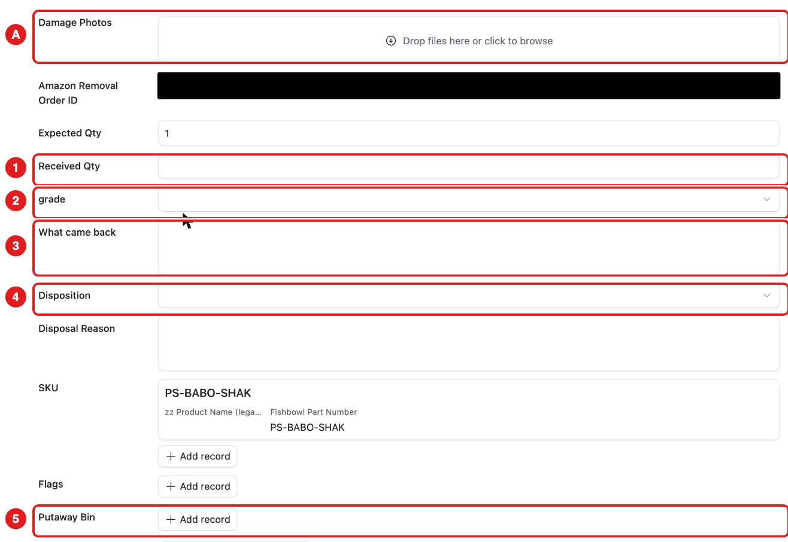
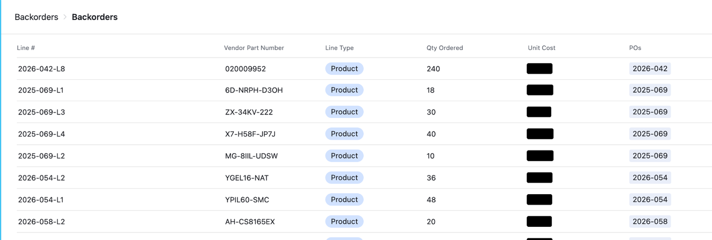
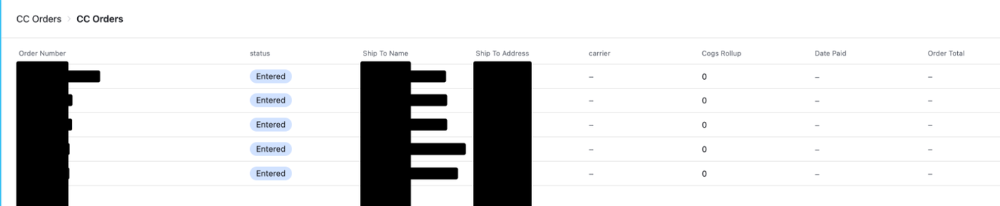

Approvals
What it is for: some stock changes are big, for example a large count difference or a disposal. They wait here for a “yes” before they change the stock.
Who uses it: Becca and Adam.
What you see: Approvals → Ledger lists the waiting changes. Most days it is empty.
Do not approve anything unless you are Becca or Adam.
Flags
What it is for: a flag is a problem the system found. Examples: a part with no vendor, a count difference, a short Amazon shipment.
Who uses it: Becca. Others may be assigned a flag.
| Sub-page | What it shows |
|---|---|
| My Open Flags | Flags assigned to you. |
| All Open Flags | Every open flag. |

To work on a flag:
- Click the flag.
- Read the Title and Note.
- Fix the cause in the right place, or ask Becca.
- When it is fixed, set Status to Resolved.
Returns Grading
What it is for: Amazon sends products back to us (removal orders). We check each item and decide what to do with it.
Who uses it: Sabith.

The list shows each returned product and how many we expect. After December 1, for each item:
- Count the items. Type the number in Received Qty (1).
- Choose a grade (2).
- Choose a Disposition (3): what we do with it.
- If you keep it, choose the Putaway Bin (4) and the Expiration Date.
Before December 1, look only. Do not type on this page unless Becca asks.
Backorders
What it is for: PO lines that are still waiting for stock from the vendor.
Who uses it: Becca. Everyone can look.

This page is read-only. Click a line to see its PO.
CC Orders
What it is for: orders that Clear Conscience sends us for their customers. We pack and ship them.
Who uses it: Sabith and Becca.

Before December 1, look only. Real CC orders are still handled the old way.